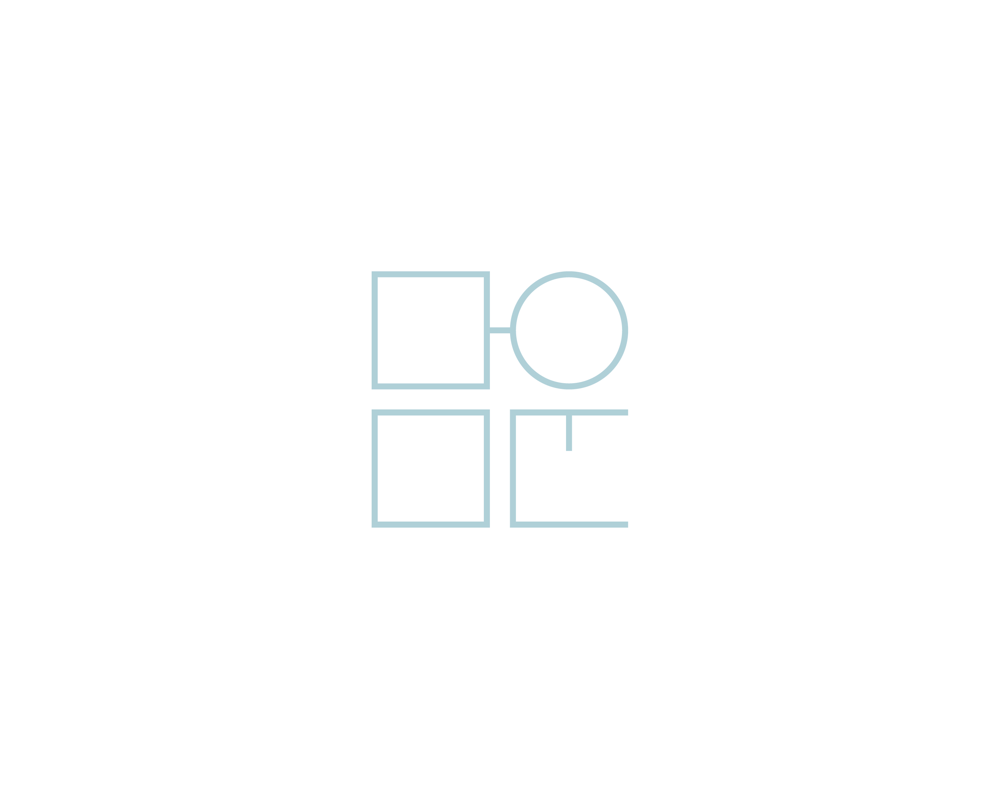

Branding
담운 [淡雲; 맑을 담 구름 운] 1.엹고 얇게 낀 구름 2.운[運]을 담다(더하다).
‘향’은 부정을 제거하고 정신을 맑게함으로써 하늘과 통한다하여 중국과 한국에서 제사의식 또는 불교에서 사용되어져 왔습니다. 현재에는 영문으로는 인센스 스틱이라고도 불리며 '심신안정, 명상, 잡내제거' 등에 탁월한 효과가 있다고 하여 일상에서 조금씩 사용 되고 있습니다. 향이 과거에서부터 가지고 있던 이야기와 현재에 가지고 있는 장점들을 더하여 새로운 콘셉트의 향(인센스스틱)을 만들었습니다.